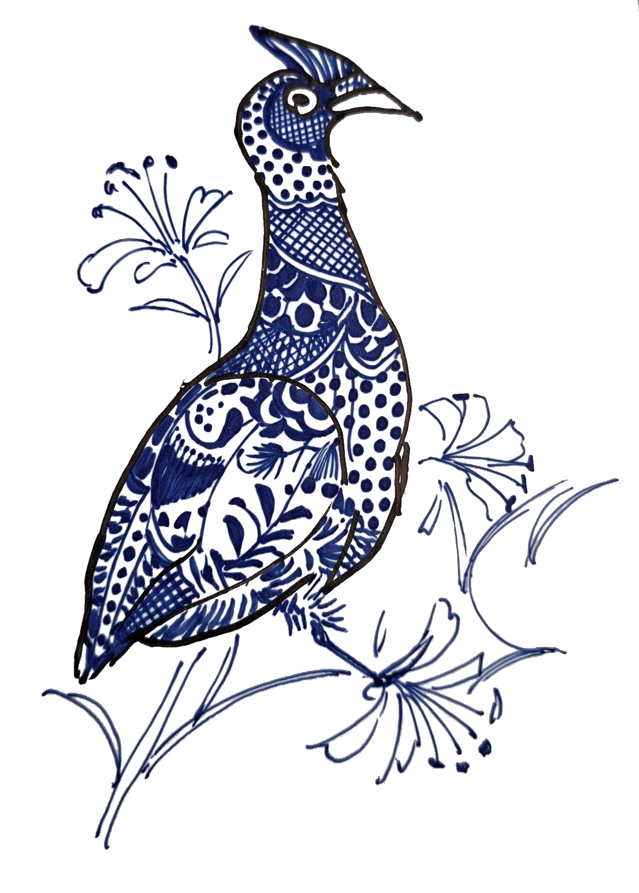
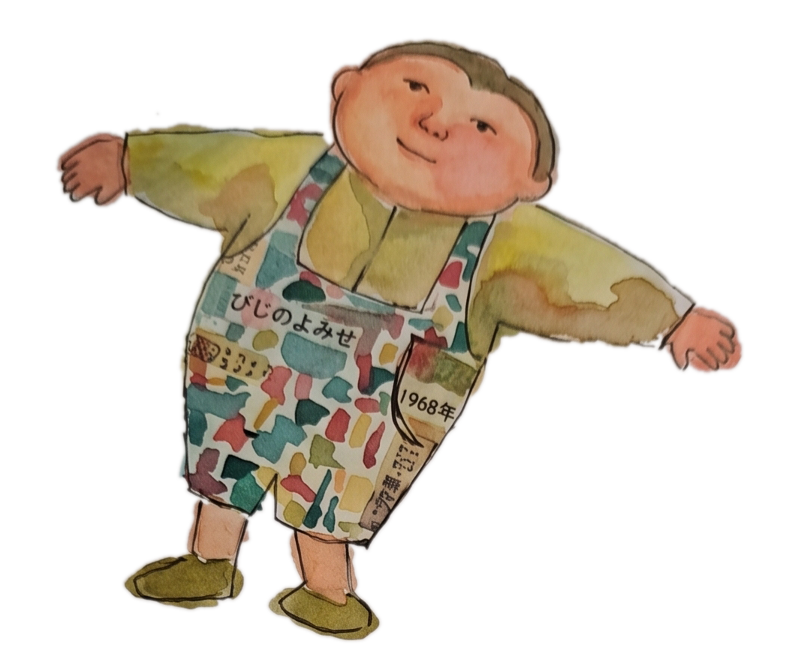

КОНЦЕПЦИЯ

Нам кажется, что в бизнесе и в обществе в целом обмен информацией не развивается из-за следующих препятствий:
- Способы и результаты выполнения работы, которую должны делать машины и ИИ и которая сама по себе мало значима, воспринимаются как конфиденциальные сведения.
- Определение смысла жизни и целей работы — подлинное предназначение человека, однако для открытого и живого обсуждения этих тем нет ни времени, ни благоприятной среды.
Сталкиваясь с этими проблемами, люди эмоционально и физически истощаются на задачах, далеких от их истинного призвания, и лишаются возможности совершенствовать ключевые навыки, учиться у окружающих, преодолевать сомнения и переосмысливать свои методы.

Поэтому платформа Chiespring распространяет практическую мудрость, опираясь на следующие базовые принципы:
- Распространение инструментов и данных, способствующих передаче рутинных административных задач машинам и ИИ, чтобы освободить людей от этой работы.
- Предоставление знаний и мудрости, помогающих выработать осознанный настрой для реализации подлинного человеческого предназначения.
- Обмен историями о жизненном опыте, которые рассказывают люди, чтобы развивать стремление понять других.
© Chiespring · Проект ведёт Ичиро Асанума